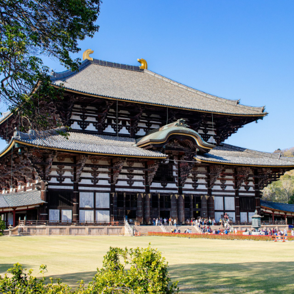

Templo Todai-ji – El Templo Histórico de Nara y el Gran Buda
El Templo Todai-ji (東大寺) es uno de los templos budistas más emblemáticos e históricamente significativos de Japón. Situado en Nara, alberga el Gran Buda (Daibutsu), una de las estatuas de bronce más grandes del mundo. La imponente estructura de madera que resguarda al Buda es un extraordinario testimonio de la ingeniería y el arte del Japón antiguo.
Un símbolo de Nara
El Todai-ji, fundado en el siglo VIII, fue construido para promover las enseñanzas y la práctica del budismo. El actual Daibutsuden (Salón del Gran Buda) es uno de los edificios de madera más grandes del mundo, con una impresionante altura de 49 metros.
El Gran Buda (Daibutsu)
El Gran Buda es una estatua monumental de bronce que representa al Buda Vairocana en posición meditativa. Con una altura de 15 metros, ofrece una visión sobrecogedora que ha maravillado a los visitantes durante siglos.
Cómo llegar al Templo Todai-ji
- 🌸 Desde la estación de Nara: Tome el autobús Nara Kotsu hasta la parada Todai-ji Daibutsuden (Salón del Gran Buda) – aproximadamente 10 minutos.
- 🌸 A pie: El templo se encuentra dentro del Parque de Nara y es fácilmente accesible caminando desde la estación.
- 🌸 Horario de apertura: 7:30 – 17:30 (los horarios pueden variar; verifique en el lugar).
- 🌸 Mejores puntos para fotos: El Salón del Gran Buda, la estatua gigante del Buda y los alrededores del Parque de Nara, habitado por ciervos.
Por qué visitar el Templo Todai-ji
El Templo Todai-ji es un destino imprescindible para los amantes de la historia y la cultura. Ofrece una experiencia espiritual profunda y la oportunidad de apreciar el rico patrimonio budista de Japón. La atmósfera serena del templo, combinada con la majestuosidad del Gran Buda, convierte este lugar en uno de los sitios más emblemáticos del país.
Etiquetas: Todai-ji, templo Nara, Gran Buda, sitios históricos Japón, Patrimonio UNESCO, Parque de Nara.
¿Está preparando su visita al Templo Todai-ji?
Para vivir una experiencia verdaderamente inmersiva y enriquecedora, le recomendamos reservar un guía privado certificado de nuestro equipo. Todos nuestros guías son profesionales oficialmente autorizados por el gobierno japonés y ofrecen visitas personalizadas según sus intereses. Contacte con antelación al guía seleccionado para confirmar la disponibilidad y recibir asistencia experta para su viaje.